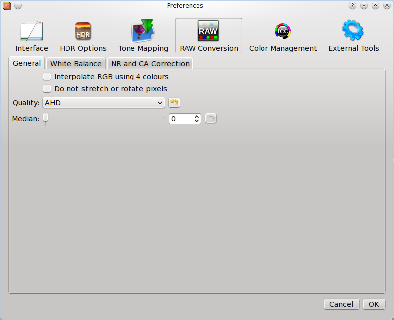

A demosaicing algorithm is a digital image process used to reconstruct a full color image from the incomplete color samples output from an image sensor overlaid with a color filter array (CFA).
Interpolate RGB as four colors:
The default is to assume that all green pixels are the same. If even-row green pixels are more sensitive to ultraviolet light than odd-row this difference causes a mesh pattern in the output; using this option solves this problem with minimal loss of detail.
To resume, this option blurs the image a little, but it eliminates false 2x2 mesh patterns with VNG quality method or mazes with AHD quality method.
Do not stretch or rotate pixels: For Fuji Super CCD cameras, show the image tilted 45 degrees. For cameras with non-square pixels, do not stretch the image to its correct aspect ratio. In any case, this option guarantees that each output pixel corresponds to one RAW pixel.
Quality (interpolation)
Select here the demosaicing RAW images decoding interpolation method. There are 4 methods to demosaicing RAW images:
Bilinear: use high-speed but low-quality bilinear interpolation (default - for slow computer). In this method, the red value of a non-red pixel is computed as the average of the adjacent red pixels, and similar for blue and green.
VNG: use Variable Number of Gradients interpolation. This method computes gradients near the pixel of interest and uses the lower gradients (representing smoother and more similar parts of the image) to make an estimate.
PPG: use Patterned Pixel Grouping interpolation. Pixel Grouping uses assumptions about natural scenery in making estimates. It has fewer color artifacts on natural images than the Variable Number of Gradients method.
AHD: use Adaptive Homogeneity-Directed interpolation. This method selects the direction of interpolation so as to maximize a homogeneity metric, thus typically minimizing color artifacts.
Median Filter: Set here the passes used by median filter applied after interpolation to Red-Green and Blue-Green channels.
In photography and image processing, color balance is the global adjustment of the intensities of the colors (typically red, green, and blue primary colors). An important goal of this adjustment is to render specific colors – particularly neutral colors – correctly; hence, the general method is sometimes called gray balance, neutral balance, or white balance.
White Balance Method
Configure the raw white balance :
Default D65: Use a standard daylight D65 white balance (dcraw defaults)
Camera: Use the white balance specified by the camera. If not available, reverts to default neutral white balance
Automatic: Calculates an automatic white balance averaging the entire image
Manual: Set a custom temperature and green level values
Temperature
Set here the color temperature in Kelvin.
Green
Set here the green component to set magenta color cast removal level
Highlights
Select here the highlight clipping method:
Solid white: clip all highlights to solid white
Unclip: leave highlights unclipped in various shades of pink
Blend: Blend clipped and unclipped values together for a gradual fade to white
Rebuild: reconstruct highlights using a level value
Brighness
Specify the brightness level of output image. The default value is 1.0
Black point value
Specify specific black point value of the output image.
White point value
Specify specific white point value of the output image.
Noise reduction
Images taken with both digital cameras and conventional film cameras will pick up noise from a variety of sources. Many further uses of these images require that the noise will be (partially) removed - for aesthetic purposes as in artistic work or marketing, or for practical purposes such as computer vision.
Threshold
Set here the noise reduction threshold value to use.
Chromatic Aberration correction
In optics, chromatic aberration (CA, also called achromatism or chromatic distortion) is a type of distortion in which there is a failure of a lens to focus all colors to the same convergence point. It occurs because lenses have a different refractive index for different wavelengths of light (the dispersion of the lens). The refractive index decreases with increasing wavelength.
Chromatic aberration manifests itself as "fringes" of color along boundaries that separate dark and bright parts of the image, because each color in the optical spectrum cannot be focused at a single common point. Since the focal length f of a lens is dependent on the refractive index n, different wavelengths of light will be focused on different positions.
Red multiplier
Set here the magnification factor of the red layer
Blue multiplier
Set here the magnification factor of the blue layer
